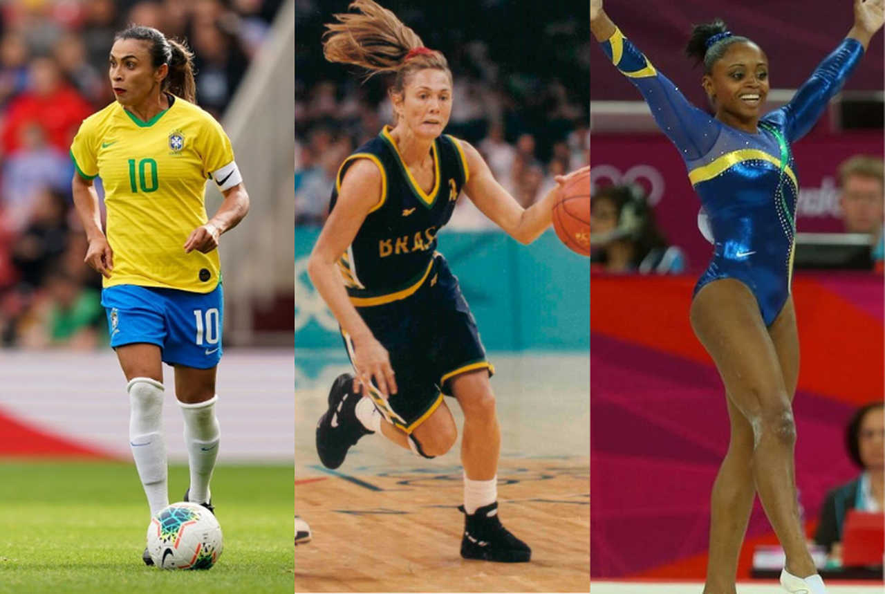
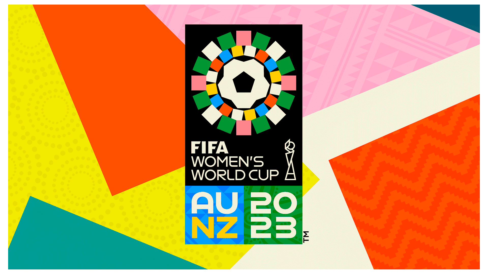

As mulheres sempre tiveram um papel muito importante no mundo dos esportes, mas nem sempre receberam o reconhecimento que mereciam. Durante muito tempo, elas foram impedidas de participar de competições e até mesmo de praticar atividades físicas.
Hoje em dia, felizmente, a situação é bem diferente. As mulheres competem em praticamente todas as modalidades esportivas e conquistam resultados incríveis em competições internacionais como as Olimpíadas e Copas do Mundo.

Falar sobre mulheres no esporte é importante porque ainda existem muitas desigualdades. As atletas mulheres geralmente recebem salários menores, menos patrocínios e menos visibilidade na mídia quando comparadas aos homens.
Além disso, o esporte ajuda na saúde física e mental, no desenvolvimento de habilidades como trabalho em equipe e disciplina, e serve de inspiração para meninas e jovens que sonham em se tornar atletas profissionais.
Para saber mais: